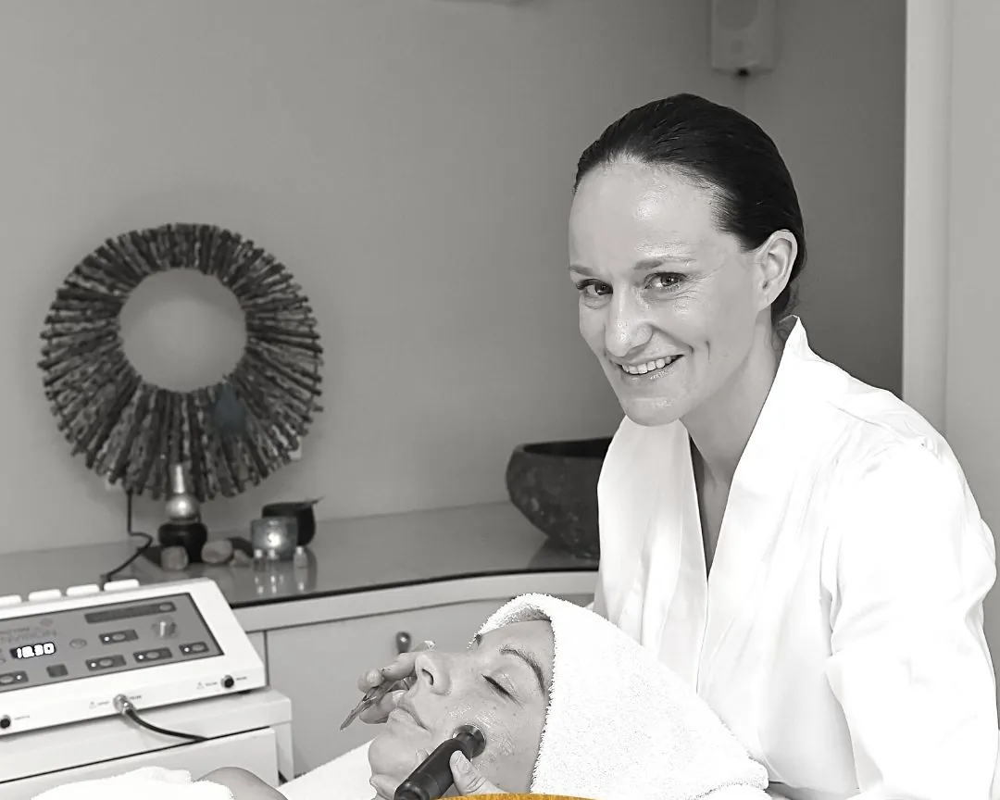
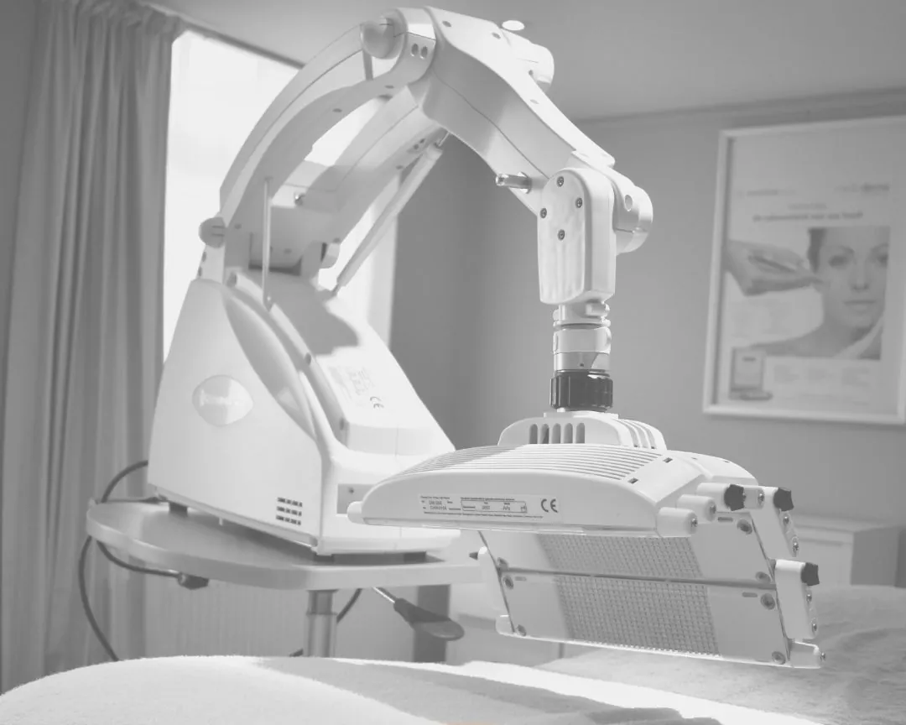
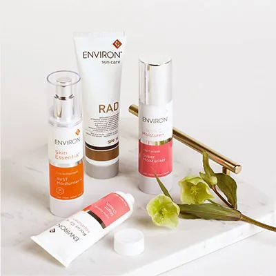
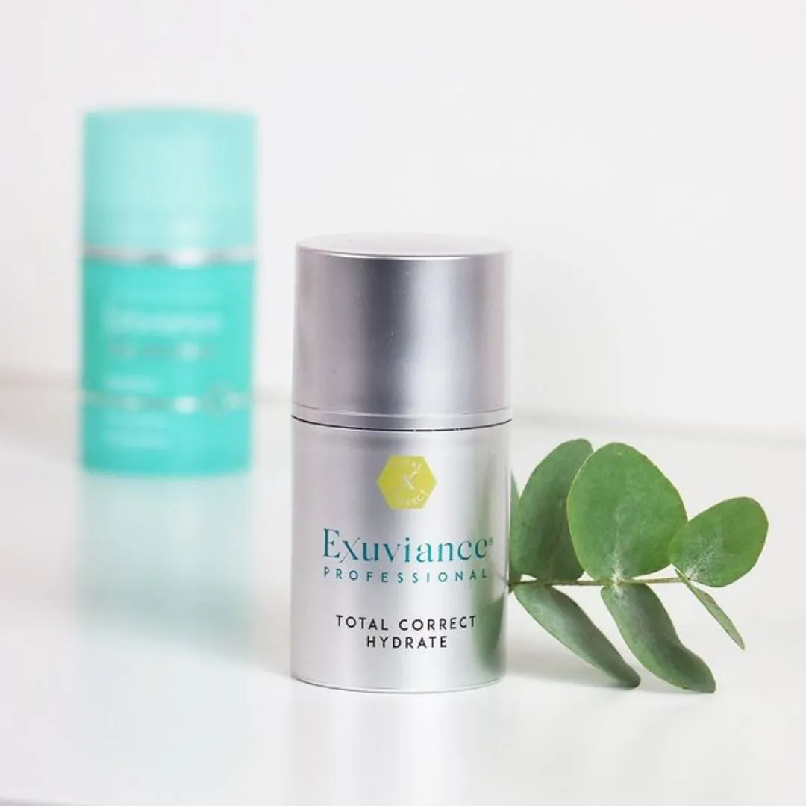
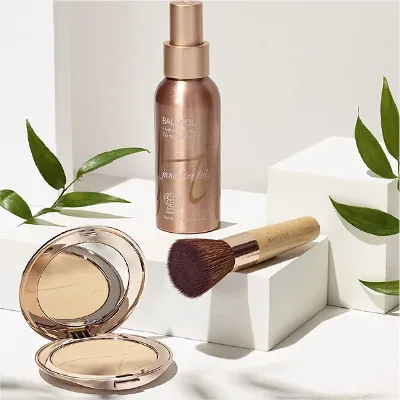

- Home
- Over Soleil
Over Soleil
Al 25 jaar huidexpert
Al 25 jaar help ik mensen aan een gezonde, stralende huid, vanuit mijn instituut in Beervelde. Huidverbetering is altijd mijn passie gebleven.
Mijn verhaal
“Als huidexpert geloof ik niet in een quick fix, maar in de juiste behandeling en advies op maat.”
Ik kies uitdrukkelijk voor kwaliteit: merken met veel actieve bestanddelen, jarenlang onderzoek en klinische testen. Elk jaar volg ik bijscholingen om ze te mogen verdelen.
Waar ik voor sta
Drie dingen waar ik niet van afwijk
Geen quick fix
Elke huid is anders. Ik neem de tijd om je persoonlijk te adviseren en te begeleiden.
Thuis telt
75% van het werk gebeurt thuis. Daarom hoort goed advies over je dagelijkse verzorging erbij.
Bewezen werking
Enkel producten en technieken die wetenschappelijk onderbouwd zijn.
Het instituut
Een stijlvol, rustig kader
Behandelruimtes met de nieuwste toestellen, een duo-cabine en een relaxruimte om na te genieten.


Merken
Waar ik mee werk

Huidverzorging op basis van vitamine A

Zachte, effectieve zuren

Minerale make-up